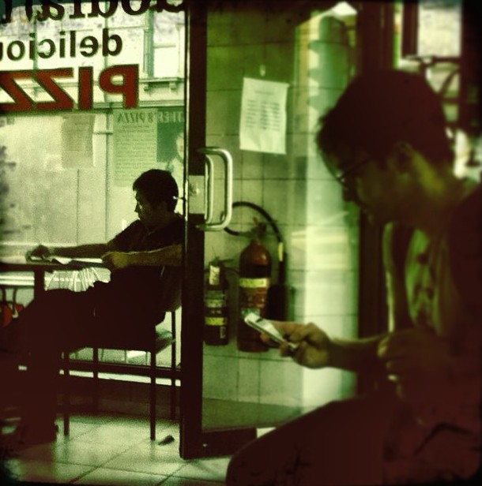

Admit it. You’ve been there. In those planned special moments, you’re surrounded by beauty in nature, having fun at a festival, or dinner with friends … and yet you’re caught up elsewhere in your mind … preoccupied by other distractions that take you away from this moment that you planned.
I think therefore I am not here. - Thich Nhat Hanh

Distractions can include thinking about where else you could be or will be; dwelling on what may have happened or what might have happen in the future. What about some of the classics like rechecking your watch, your inbox, or the Facebook news feed? When we’re absorbed in distraction after distraction, we’re sometimes not even fully engaged in them. We’re doing them to appease the unrest within us. We’re here but not really here. I bet you’ve had countless experiences when you’re out to dinner with friends, and everyone’s constantly grabbing their phones to check Facebook or text messages. This is where informal mindfulness comes in.
We can practise mindfulness in everyday situations. When we do it’s informal. Mindfulness helps us notice when we’ve disengaged from what’s going on around us, like when we’re out with friends but not really connecting with them. The great thing is that we can bring mindfulness with us at any time and anywhere.
I’m writing this hesitantly because although I love my morning practice, my informal practice could be better. My friends will point out that I shouldn’t be on my phone when I’m out with them, because I'm supposed to be the mindful one. We all do this sometimes, don't we? I'm writing this now because I want you to know that it's easy to forget - and that's okay. The bottom line is that formal and informal practices enrich each other. And this enriches your life.